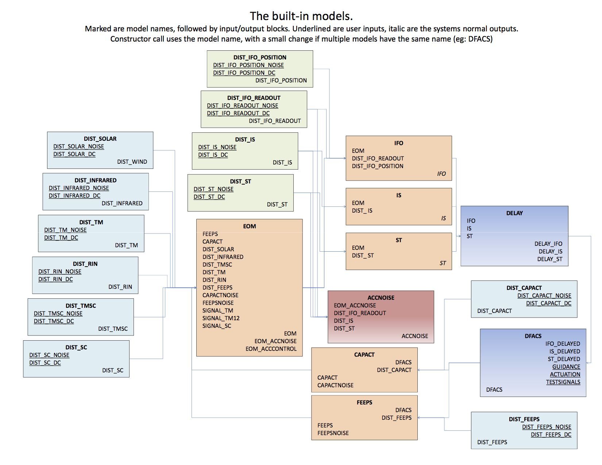

| LTPDA Toolbox™ | contents | |
Let's start with a word on terminology. The current implementation of the LPF models in LTPDA uses:
The 3D closed-loop dynamical system of LTP is modelled using a number of sub-models
which are then assembled together to produce the final LTP model. The following
diagram shows the full set of ssm models which are assembled together
to give the main composite model 'LPF'.

All noise models begin with the prefix DIST_*, and they are inputs to the corresponding model.
The noise models typically have one output block, whose name is the same as the model itself.
Each submodel has many
parameters which all have default values. In section 7 you will learn how to
change these parameter values at both build time and run time.
As well as having many parameters, each sub-model has many inputs and outputs. In the process of assembling the full LTP (or LPF) model, some of the inputs disappear (because they are connected to outputs). However, many do not.
The following diagram shows the full
LTP model indicating many of the inputs and outputs you have access to.

Any input named DIST_* will not appear in the full LPF model because the various
noise models will connect to these. However, the noise models themselves also have inputs
where you can inject noise/signals. These are described below.
The LTP model (and its submodels) have many inputs labelled DIST_*. These inputs are designed for inputting noise. The output block has two ports, one named *_DC for the DC term, and one named *_NOISE for the fluctuating term. To simplify this process, we have created a set of noise models (noise shaping filters) which, when you input unit variance white noise, inject a particular coloured noise into the LTP model. The first figure above shows the various noise models.
| |
Introduction to state-space models in LTPDA | Building an LTP model | |
©LTP Team